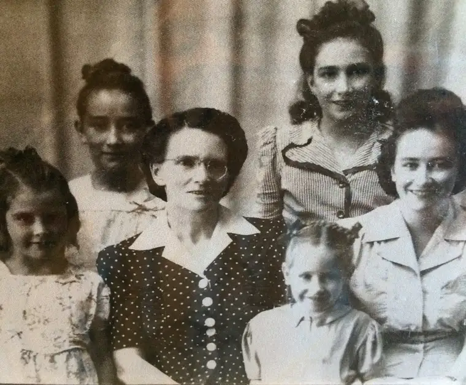

I remember, as a child, wondering about my Grandma Mary, my father’s mother, the one he loved so much that he would splurge on strawberry ice cream — her favorite — with his hard-earned dimes as a teenager just to have some time with her; a mother-son chat over a cold, refreshing treat in the summer.
She died, tragically, when he was still a teen, reaching toward adulthood. He was 19, the same age my oldest son is now, and it’s hard to conceive how he lived through the grief of losing someone so dear, at such a crucial age. I know it devastated him and likely caused a complete change in his life’s path.
In my father’s own final moments, my heart lurched, and, wanting him to leave with a hopeful thought, I blurted out, “You get to see your mother.”
But I never knew her. I used to imagine her watching us from somewhere on high. I ached to know her. How could it be a true loss if you’d never even met the person? And yet I felt it as a loss, a real one. A vague loss, but a loss nonetheless.
In the past couple years, especially since my father’s death, I’ve been getting to know my Grandma Mary for the first time. Little by little, details are filling in through relatives who have remained behind, and now have felt compelled to share a bit about this incredible woman, who raised nine children during the Depression in North Dakota, mostly alone as her husband was often away building and maintaining railroad tracks.
{kind=link}

The most recent “convergence” with Grandma Mary, or “Daught” as she was called, happened during an unexpected visit with my father’s cousin, Kay. Kay comes from the Boyle side of the family. Mary was a Boyle, too, and as Kay tells it, her mother and my grandmother were the best of friends. I loved thinking of my grandmother in these terms. To realize that not only did she mean a lot to her children, but was beloved by others outside that circle, brought me one step closer to her.
But then Kay began to tell me more; about how this strong woman would get up in the wee hours of the morning and walk over to the local church in New Rockford, N.D., and creep into the sanctuary. If she noticed a chill, she would head over to the fireplace that warmed the church and add wood to keep it burning and warm.
Sometimes, the priest would be missing in action — sleeping in on a cold morning — so she’d hustle on over to the rectory to wake him so he could start Mass.
And that was when it all came together — in the visual of my grandma, my father’s mother, sneaking out of her home in the middle of winter in order to soak in the presence of the living God — and I knew the answer to the puzzle that had kept me somewhat confounded as a teenager.
My sister had been away to college, and during that time, questions had come to her she couldn’t answer that now had her discerning her future faith path. “I’m thinking of leaving the Catholic Church,” she told me quietly one day while on break. Stunned, my mind whirled. There was so much I didn’t know about the faith of our rearing, but I had a sense that leaving it would not be my path. It had something to do with our history — a history of which we were still largely ignorant. And yet we knew our father had been in the seminary for a while, which, to me, tells of a big faith that, somewhere along the line, had been nurtured by someone with an even bigger faith…
Someone, I now realized, like our Grandma Mary, who held the faith so deep and dear that she would rouse herself from below the covers of her warm bed on a chilly morning and race to the church to get to Mass, to start her day on bended knee and folded hands, in order to gain the courage she would need to make it through another day of arduous home-making and child-raising.
Grandma Mary didn’t have it easy — I’ve heard stories, and that’s just a slice of what her reality must have been. But she did have Jesus nearby, and she knew that without that, she couldn’t survive.
She knew, too, that her Catholic faith was something to hold onto mightily. It was part of her very blood, this Catholic faith, and it would sustain her. She counted on that like nothing else, and it was important enough that even if the church fireplace was down to the embers, she would see to it herself to add more logs to keep the flames burning — those in the church hearth and in her own heart.
This is just a piece of Grandma Mary, but it’s an important piece. Hearing about her commitment to her faith was like an explosion in my soul; an explosion of understanding.
For I have to believe that a woman that faithful has been near to us all this while. I have to believe that the woman who would do what she did for her family and for her soul wouldn’t let anything come between her and her family and her God — not even the veil of heaven between earth.
When I said to my sister, “Don’t leave until you know what you’re leaving,” the utterance didn’t seem to come solely from me. I wasn’t wise enough on my own to have had that insight. No, it had to have come from someplace else, some transcendent reality. Maybe, who knows, it was a little nudge from Grandma Mary.
Someday, when my time comes to join our dear ones on the other side, after I’ve scooped up our little Gabriel, whom I’ve never gotten to hold here on earth, I’m going to find Grandma Mary and give her a big old hug and thank her for the love of faith she has helped bring into my heart, in some way I can’t fully understand and am only slowly beginning to realize.
Q4U: How has your family history played a role in your faith journey and inclinations?